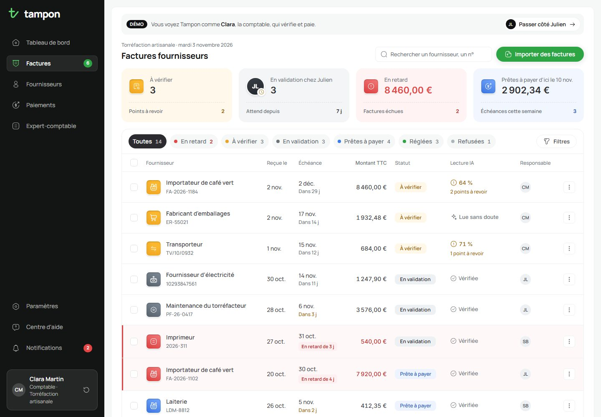
Le point de départ
Dans une PME, les factures fournisseurs arrivent par e-mail, en PDF ou en photo, à toute heure. Quelqu’un doit relire les montants, faire valider la dépense, puis penser à payer avant l’échéance. Un IBAN modifié, une facture reçue deux fois ou un virement oublié coûtent vite cher.
J’ai conçu Tampon pour les PME où deux ou trois personnes se partagent ce travail. J’ai suivi deux rôles, incarnés dans la démo par deux personnages. Clara, la comptable, vérifie et paie. Julien, le gérant, valide les dépenses, souvent entre deux rendez-vous. Autour d’eux, un responsable des achats suit certaines factures, et l’expert-comptable attend chaque mois un export propre.
Voir où en est tout
Savoir d’un coup d’œil ce qui attend, ce qui bloque et ce qui est réglé.
Arrêter les erreurs
Repérer une lecture douteuse, un IBAN suspect ou un doublon avant de payer.
Savoir qui agit
Chaque facture dit qui doit faire la prochaine étape, et depuis quand elle attend.
Les points forts
Ce que je retiens de ce projet, avant d’entrer dans le détail.
Une couleur par état
La couleur dit où en est la facture et qui doit agir, de la carte à l’étiquette.
Une IA qui montre ses doutes
Elle ne tranche jamais seule : un champ douteux se règle d’un clic ou se corrige à la main.
Vérifier n’est pas valider
Clara contrôle et paie, Julien autorise la dépense. Chacun a sa vue.
Le gérant valide en trente secondes
Un seul parcours pensé pour le téléphone : celui de la personne qui n’est jamais à son bureau.
Les cas difficiles sont prévus
Doublon, photo illisible, devis glissé dans le lot, nouveau fournisseur, refus avec motif.
Une erreur ne coûte rien
Chaque action s’annule pendant quelques secondes, et un IBAN suspect bloque le paiement.
La liste
J’ai construit la page autour d’une seule question : qu’est-ce que Clara doit faire ce matin ? Les quatre cartes du haut y répondent, puis le tableau détaille chaque facture avec son état, sa lecture par l’IA et la personne qui la suit.
- Les cartes du haut sont des filtres : un clic ouvre l’onglet correspondant. La carte « En validation chez Julien » montre son visage et depuis combien de jours il fait attendre, plutôt qu’une couleur de plus.
- Les onglets portent le point de couleur de chaque état : ils servent aussi de légende au tableau.
- « En retard » est un filtre à part. Une facture en retard garde son vrai statut, pour qu’on voie où elle bloque.
- La pastille d’un fournisseur porte une icône pour dire de quoi il s’agit, et la couleur de l’état pour dire quand agir.
- La barre d’actions groupées ne propose que ce qui est possible pour la sélection et pour la personne connectée.
J’avais placé un bouton d’action au bout de chaque ligne. Il ouvrait la fiche, exactement comme un clic sur la ligne : je l’ai retiré, et le tableau a gagné en place et en calme. J’ai aussi retiré le pourcentage de confiance des lignes sans doute : affiché partout, il ne signalait plus rien.
Une couleur pour chaque état
C’est la partie que j’ai le plus fait évoluer. Ma première règle, gris pour ce qui reste à faire et vert pour ce qui est fait, rendait les étapes impossibles à distinguer. J’ai donc donné une couleur à chaque état, puis j’ai réservé le vert à une seule idée : c’est réglé.
- J’avais d’abord mis « Prête à payer » en vert : on la croyait terminée alors qu’il restait le virement. Je l’ai passée en violet, puis en bleu, plus parlant pour un paiement programmé.
- « À vérifier » et « À valider » se confondaient à la lecture. J’ai renommé la deuxième étape « En validation » : côté Clara, la facture est chez Julien. Côté Julien, son onglet garde « À valider », puisque c’est à lui d’agir.
- La couleur n’est jamais seule : chaque état garde son mot, et « Réglée » ou « Refusée » ajoutent une coche ou une croix.
- Le rouge reste rare : deux lignes, une carte et un onglet. Il garde ainsi toute sa force.
La fiche facture
Vérifier la lecture de l’IAà vérifier
À gauche, le PDF tel qu’il est arrivé. À droite, ce que l’IA en a lu, champ par champ. Au survol d’un champ, la zone correspondante s’allume sur le document : Clara compare sans chercher.
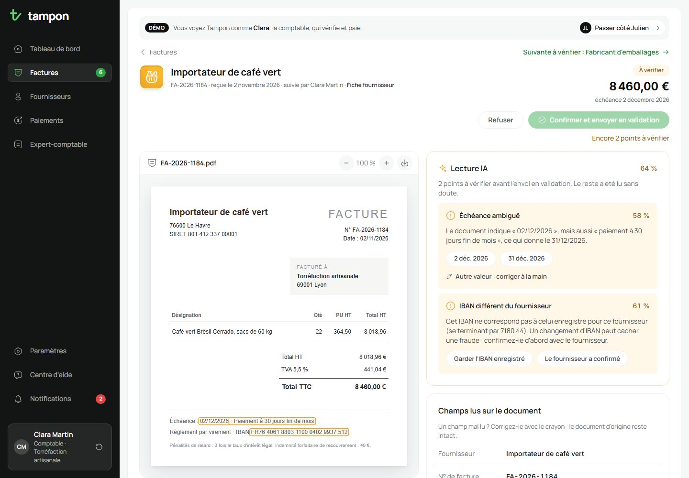
Quand l’IA doute, elle le dit et propose de trancher. Sur cette facture, l’échéance est ambiguë et l’IBAN ne correspond pas à celui du fournisseur. J’ai traité ce second cas comme un signal de fraude : le bouton « Confirmer » reste grisé tant que Clara n’a pas choisi.
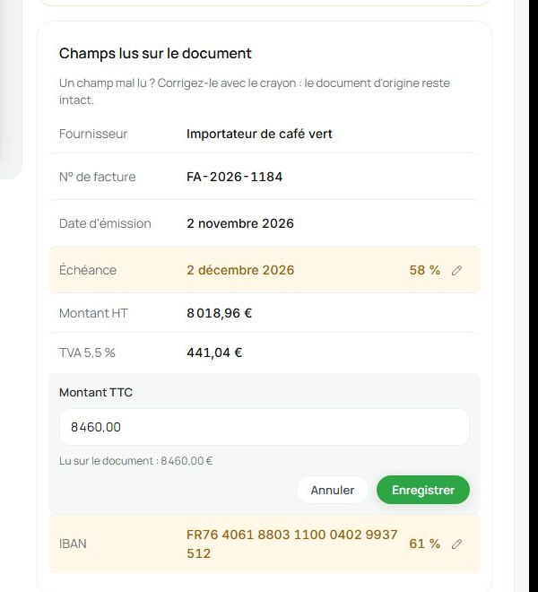
- Aucune des deux propositions n’est juste ? Clara corrige la valeur à la main. Le champ passe en bleu avec « Corrigé », pour qu’on sache que la donnée vient d’elle et non de l’IA.
- Pendant la correction, la valeur lue sur le document reste affichée sous le champ, et une erreur explique comment écrire le montant.
- Le pourcentage de confiance n’apparaît que sur les champs douteux : c’est là qu’il aide à décider.
- Un lien « Suivante à vérifier » enchaîne les factures sans repasser par la liste.
Deux rôles, deux vues
J’ai séparé deux contrôles que l’on confond souvent. Vérifier, c’est s’assurer que la facture est bien lue. Valider, c’est accepter de payer. Celui qui saisit n’autorise pas la dépense, et celui qui valide n’envoie pas les virements : c’est le principe de séparation des tâches en comptabilité. J’en ai fait deux vues du même outil.
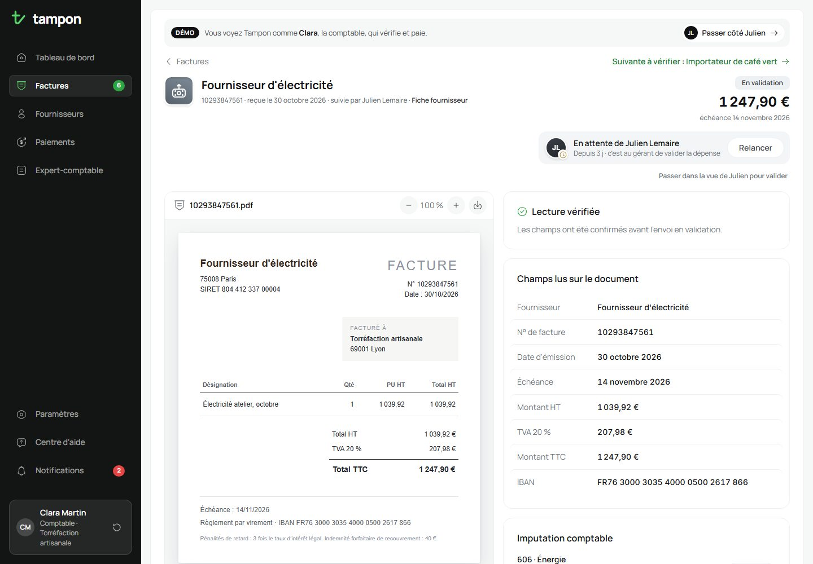
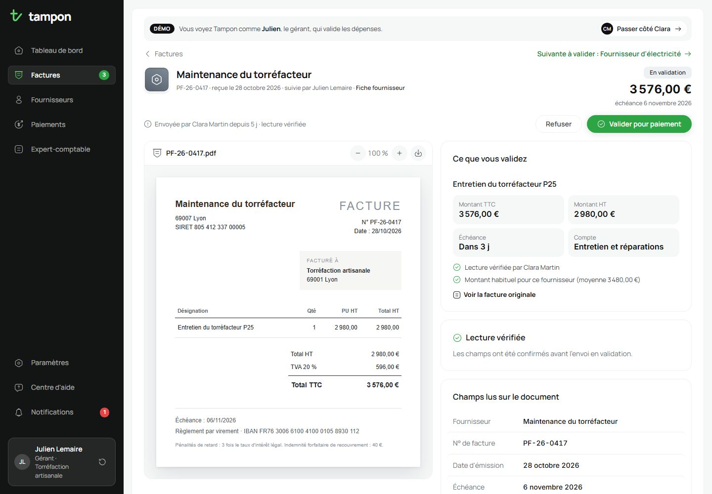
- Julien voit en haut de la fiche ce qu’il achète, le montant, l’échéance en jours et une comparaison avec ce que le fournisseur facture d’habitude. Un écart de plus de 10 % passe en orange.
- Une relance, une validation ou un refus prévient l’autre personne par une notification, avec un lien vers la facture.
- Pour la démonstration, un bandeau en haut de chaque page permet de passer d’un rôle à l’autre en un clic.
Refuser, avec un motifrefusée
Un refus sans explication relance les échanges par e-mail. J’ai donc rendu le motif obligatoire : prestation non réalisée, montant incorrect, doublon, mentions manquantes. Tampon prévient le fournisseur et demande un avoir, puis la fiche garde la suite en mémoire jusqu’à sa réception.
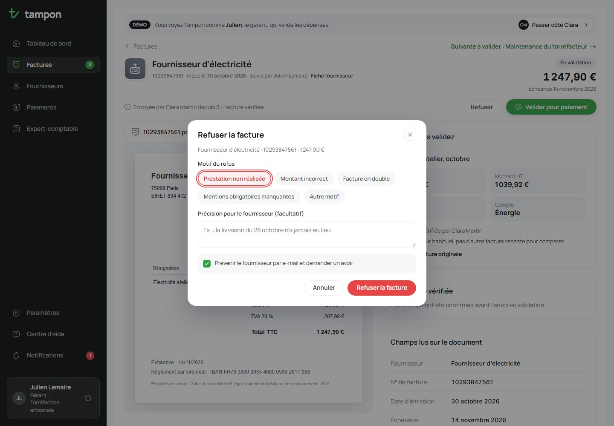
Julien, sur son téléphone
J’ai choisi de ne pas décliner tout l’outil en mobile. Clara travaille à son bureau : elle compare la facture au document, corrige des champs et prépare ses lots de virements, ce qui demande un grand écran. Pour elle, une version responsive suffit. Julien, lui, est à l’atelier ou en rendez-vous. Quand une facture l’attend, il doit pouvoir dire oui ou non en trente secondes. J’ai donc conçu un seul parcours mobile, le sien.
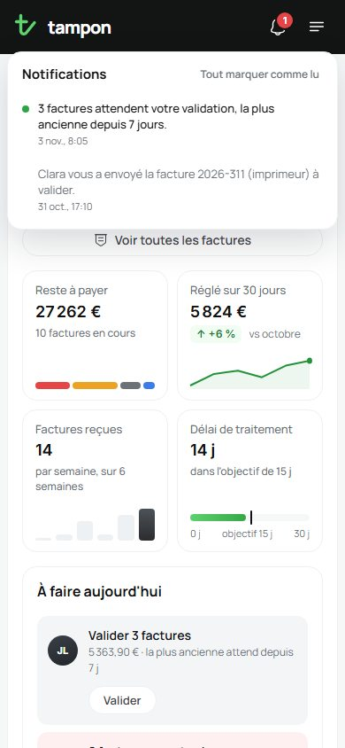
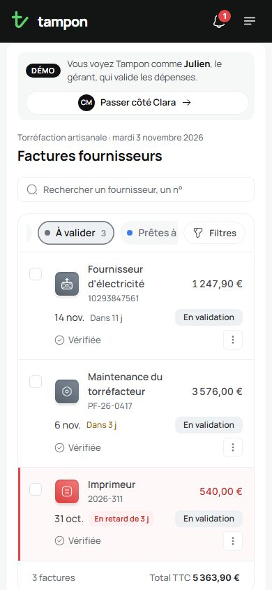
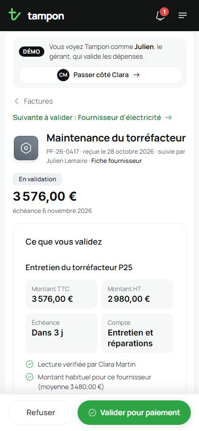
- Sur téléphone, la liste de Julien s’ouvre sur sa file à valider : les cartes de chiffres et le bouton d’import, utiles à Clara, disparaissent.
- Refuser et Valider restent fixés en bas de l’écran, à portée de pouce, sur 48 px de haut.
- Une fois la facture validée, un grand bouton « Suivante » indique combien il en reste. Julien vide sa file sans repasser par la liste.
- Pour tout le monde, la barre du haut se réduit au logo, à la cloche et à un menu burger qui ouvre un tiroir.
L’import et ses imprévus
Le cas idéal, une facture nette lue à 99 %, est le plus simple à dessiner. Je me suis surtout demandé ce qui arrive le reste du temps. J’ai donc glissé dans l’exemple d’import les documents qu’une comptable reçoit vraiment.
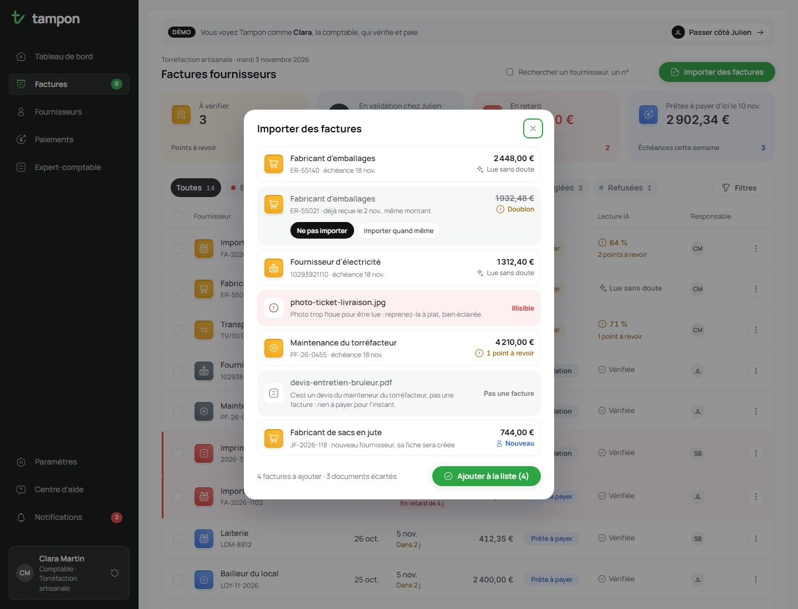
- Un doublon n’est pas importé par défaut. Clara peut tout de même l’ajouter, et la fiche le signale alors comme doublon certain.
- Une photo floue est écartée avec un conseil concret : la reprendre à plat, bien éclairée.
- Un devis glissé dans le lot est reconnu : il n’y a rien à payer pour l’instant.
- Un nouveau fournisseur obtient sa fiche automatiquement, mais ses virements restent bloqués tant que son premier IBAN n’est pas confirmé.
Autour des factures
Autour de la liste et de la fiche, j’ai dessiné les écrans qui ferment la boucle : savoir quoi faire en arrivant, payer, puis transmettre le mois à l’expert-comptable.
Tableau de bordchaque matin
Les tâches du jour, classées de la plus urgente à la plus calme, et les échéances des prochaines semaines en colonnes empilées par état.
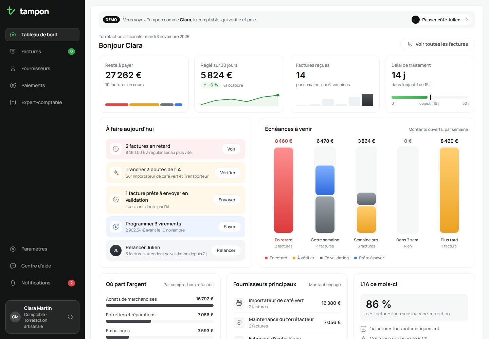
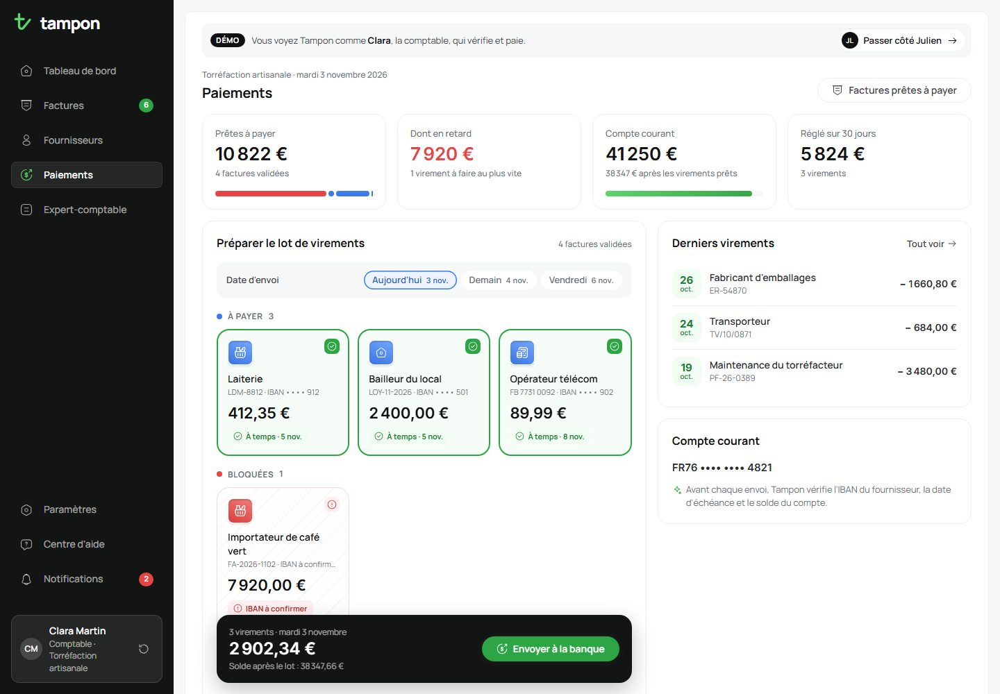
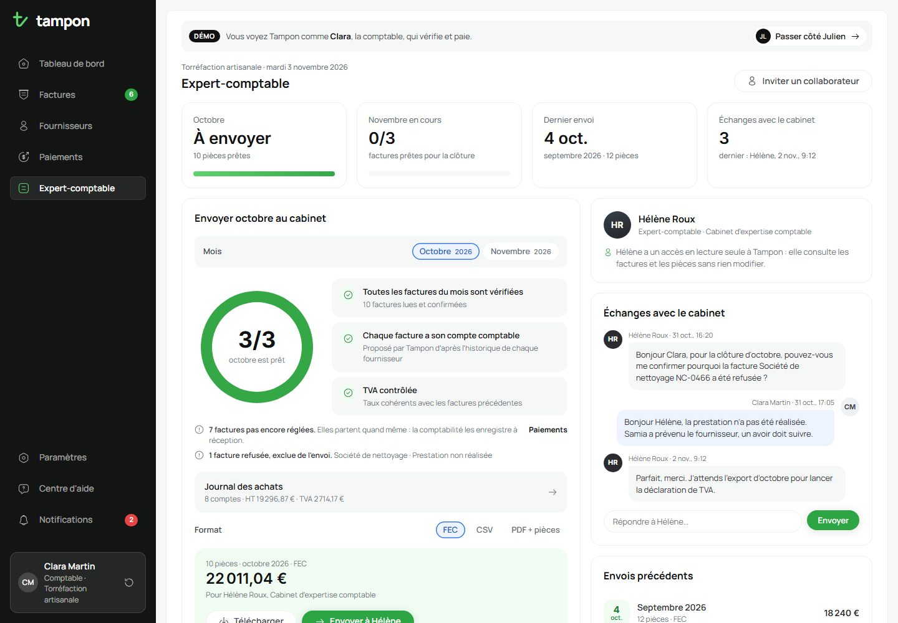
L’identité
J’ai choisi un nom qui parle du geste de validation : Tampon. J’ai exploré cinq logos avant de retenir un « t » minuscule dont la queue remonte en coche. La première lettre du nom et l’action de valider tiennent dans un seul trait, lisible jusqu’à 16 px.
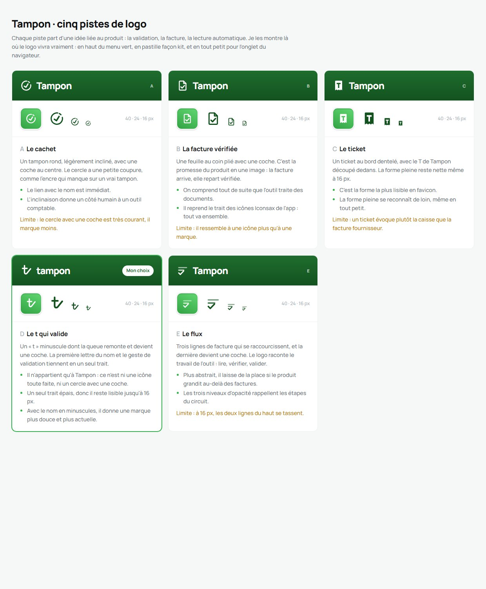
Le menu presque noir laisse le vert à ce qui compte : le logo, la page ouverte et ce qui est réglé. J’ai procédé de la même façon pour les cartes du haut et la barre d’onglets : plusieurs pistes côte à côte, puis un choix argumenté.
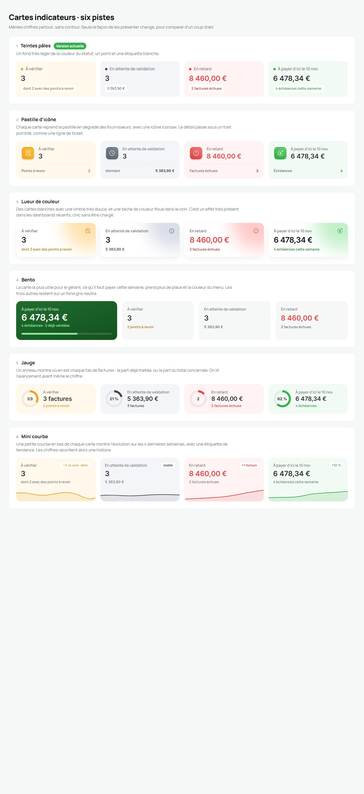
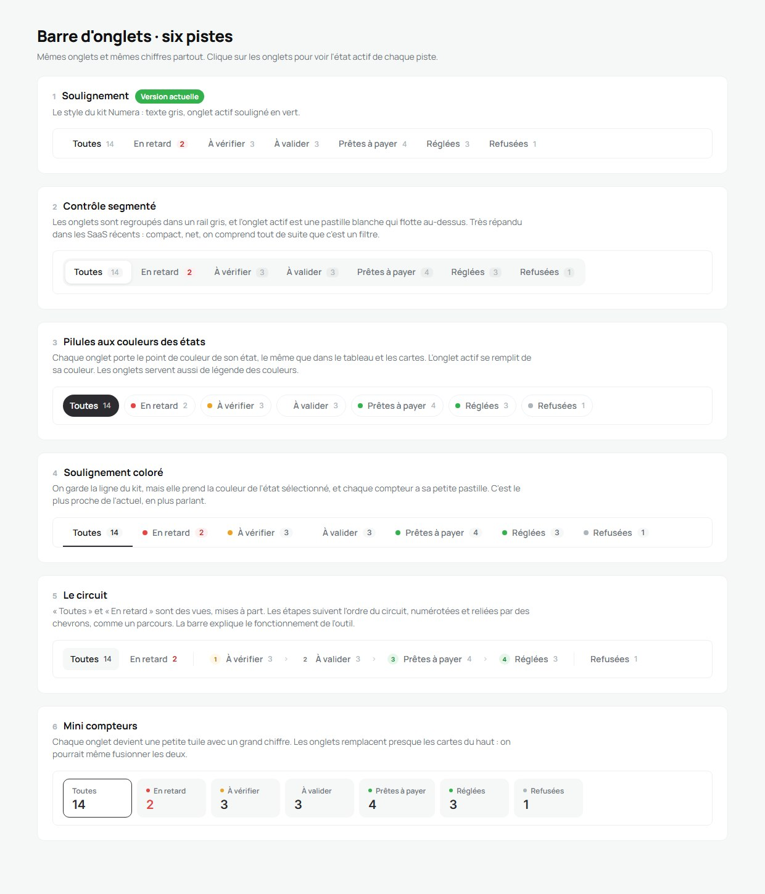
Le design system
J’ai rassemblé les couleurs, les styles de texte, les composants et leurs règles d’usage dans un design system. Sa page utilise le même code que l’application : quand un composant change dans l’outil, sa documentation change avec lui.
- Les deux familles de cartes de chiffres ont maintenant une règle écrite : une carte teintée se clique et filtre, une carte blanche se lit.
- Des règles d’écriture : des états aux noms fixes, des dates relatives d’abord, des messages d’erreur qui disent comment corriger.
- Des règles d’accessibilité visant le niveau AA : j’ai foncé le vert et l’orange des textes pour atteindre un contraste de 4,5:1.
Faites défiler ou attrapez la fenêtre pour parcourir le design system.Faites défiler dans la fenêtre pour parcourir le design system.
La fabrication
J’ai codé l’application à la main pour qu’elle se comporte comme un vrai outil, et pas comme une simple maquette.
- HTML, CSS et JavaScript simples, sans framework.
- Des chiffres toujours justes : quand une facture change d’état, les cartes, les onglets, les compteurs et les notifications suivent.
- Une démonstration qui se souvient : les décisions restent dans le navigateur, avec un bouton pour tout réinitialiser et un lien pour ouvrir l’outil côté gérant.
- Annuler partout : chaque action qui change des données propose « Annuler » pendant six secondes, notifications comprises.
- Des animations courtes à chaque changement d’état, coupées quand l’ordinateur demande moins d’animations.
- L’accessibilité dans les détails : contrastes AA, menus et fenêtres utilisables au clavier, fermeture avec Échap, statuts jamais portés par la couleur seule.